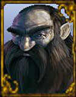
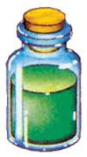

INTRODUZIONE
I Duergar, anche chiamati Nani Grigi per il colore della loro pelle o Nani
del Sottosuolo per l'abitudine a risiedere nelle profondità della terra, sono
una razza malvagia e cupa, ma che ha conservato la propria abilità superiore
espressione dell'artigianato nanico. Questa razza, infatti, si è guadagnata un
suo spazio autonomo tra gli abitanti delle profondità terrestre ed ha creato
oggetti (in particolare armi e armature) da poter commerciare con le razze che
ivi si trovano in continua lotta tra loro. I Duergar sono diffusi e numerosi
quasi quanto gli Elfi Scuri e un tipico reame dei nani grigi è tanto forte,
crudele e ricco quanto una grande città degli elfi scuri. Ma mentre numerose
comunità Drow mirano ad esaltare la loro nobiltà, quelle dei Duergar tendono ad
accumulare risorse anche attraverso l'estrazione e la lavorazione delle
ricchezze minerali del sottosuolo.
I Duergar sono burberi, isolazionisti ed industriosi, ma tendono ad essere dei
migliori vicini dei Drow essendo meno aditi a procurarsi vittime per le torture
in superficie. Costoro rappresentano i migliori artigiani e mercanti tra le
comunità che vivono nelle profondità. Le loro carovane attraversano i cunicoli
sotterranei fino a giungere alla superficie.
STORIA DEI DUERGAR
La storia dei Duergar affonda le sue radici nella mitologia areliana, ossia
in quel periodo storico in cui la verità si fonde con la leggenda. In
particolare, la storia dei Duergar presenta a livello genetico un legame
inscindibile con la storia del culto di Bazaràk, il malvagio dio nanico delle
profondità. La scissione tra Srodan e Bazaràk avvenuta nel corso della Guerra
degli Dei comportò che un cospicuo numero di nani fedeli al dio della battaglia,
all'esito per loro nefasto del conflitto, fu esiliato per aver tradito il grande
Srodan e fu costretto all'esilio. Questi nani, fieri combattenti di indole
prepotente e malvagia, cercano scampo nelle profondità del sottosuolo dove
crearono comunità autonome e divennero un vero e proprio popolo. Non a caso
nelle comunità di Duergar l'unica divinità adorata è Bazaràk essendo bandito il
culto di Srodan. Unica eccezione significativa è rappresentata da alcune sette
di fedeli di Karan, il dio della morte. Queste organizzazioni sono tollerate per
i poteri necromantici ai quali attingono attraverso la loro venerazione senza
che, però, assurgano a religione maggioritaria o di stato. Si tratta, infatti,
sempre di gruppi religiosi minori (anche se in alcuni casi molto potenti) che,
nonostante siano riconosciute, devono mantenere un'organizzazione settaria ed
operare ai margini della comunità.
PSICOLOGIA DEI DUERGAR
Sebbene i Duergar possano far mostra delle rinomate virtù di coraggio e
determinazione, costoro sono anche avari, scontrosi, burberi, violenti ed
ingrati. Coltivano rancore per tutta la vita e non smettono mai di rammentare i
torti subiti, siano questi reali o solo immaginari. Sono inclini a credere che
la forza sia garanzia di diritti, così che molti non hanno pietà per coloro che
sono troppo deboli per difendersi da un nemico più forte. Il carattere dei
Duergar è spesso ciò che li rende tanto malfamati ed evitati anche tra le razze
civilizzate. Non sono affatto socievoli, né interessati all'assimilazione di
culture differenti dalla loro. Si vantano di essere una razza autosufficiente,
che non ha mai avuto bisogno di nessuno per giungere al proprio splendore. Di
conseguenza, costoro manifestano spesso e volentieri un forte e radicato
razzismo ed antisemitismo verso tutti i "diversi". I nani grigi sono un popolo
che venne esiliato dal resto del mondo e da questa condizione si è sviluppato il
loro carattere fiero e scontroso. Nel corso del loro isolamento hanno maturato
un profondo risentimento nei confronti di tutte le altre razze naniche, e non
solo. Nella loro visione del mondo nessuno è meritevole di confidenza o fiducia,
nessuno che sia estraneo al clan è affidabile. Questa xenofobia li ha resi
estremamente chiusi ed ostili nei confronti di chiunque si addentri nel loro
territorio. I Duergar tendono ad essere burberi e taciturni, privi di interesse
nell'intrattenere una conversazione con qualsivoglia creatura a meno che questo
non possa fruttare qualche reddito. Difatti, come i propri cugini di superficie,
mantengono un amore particolarmente perverso per l'accumulazione di ricchezze e
di oggetti di valore, passione portata all'estremo dal loro lato oscuro e violento.
Ogni azione dei Duergar al di fuori della loro comunità è strettamente legato al
lucro. La loro avidità leggendaria li spinge a non compiere mai niente per
niente, ogni loro azione deve essere retribuita a dovere ed i rapporti con gli altri, anche tra esponenti della stessa razza, raramente
si esprimono in una genuina amicizia o amore, bensì si fondano sulle prospettive di guadagno. Un Duergar non si accontenta di vivere di sussistenza, ma fa
sempre il possibile per accumulare ricchezze. Sono estremamente avari, per loro
ogni oggetto è un potenziale possedimento da prendere anche a costo di usare la
forza. Non si prendono dunque il disturbo di discutere con chi non ha niente da
offrire. Il denaro è dunque il migliore amico di un Duergar. Questo conferisce
loro la fama di creature vili e doppiogiochiste. Sono per loro natura fedeli a
chi offre di più o chi può garantire un cospicuo e costante guadagno o mostra
loro la strada per acquisire fama e potere. I Duergar, d'altro canto, sono
estremamente legati alla propria cultura, che è l'unica cosa che considerino
meritevole di eterna fedeltà. Il tradimento, anche nei confronti di un altro
Duergar, può essere tollerato, ma il tutto deve svolgersi senza rompere quelli
che sono i principi di una razza così rigida e disciplinata. Un Duergar
raramente si permette di discutere con quelli che sono i dogmi della propria
divinità o dei leader della propria comunità poiché cresciuti con una educazione
che non ammette libertà di alcun genere. Sin dal principio, vengono cresciuti
come parte di un grande meccanismo per il quale devono essere efficienti e
impeccabili. Da qui si risale alla grande laboriosità dei Duergar. Per i nani
grigi infatti il lavoro è una cosa sacra e nobilitante, che dà a un individuo
una ragione di esistere e uno sprone a migliorare se stessi ed il proprio
popolo. E' dunque nel carattere di tutti i Duergar, eccetto casi di individui
esiliati o cresciuti in altri ambienti, essere pronti al lavoro e non prestare
attenzione alle sciocchezze od a tutte quelle attività che non hanno scopi
produttivi. L'arte in sé considerata per un Duergar è un concetto totalmente
privo di senso, ogni cosa deve avere uno scopo preciso e condurre ad un
risultato o ad un profitto.
ALLINEAMENTO SOCIALE DOMINANTE DEI DUERGAR
La maggior parte dei Duergar è di indole
malvagia. Comunemente, infatti, costoro, danno poco valore alla vita ed alle
proprietà altrui. Sono consumati dall'invidia per chiunque sia migliore di
loro e non mostrano alcuna traccia di pietà per coloro che non sono così
fortunati. Un numero minore di Duergar possiede un'indole spostata verso
l'agognata neutralità; costoro, isolazionisti e schivi, si rifugiano nelle
tradizioni, nel lavoro e nelle regole del clan per sopravvivere dignitosamente.
Sono veramente pochi, infine, i Duergar in grado di tendere al bene.
Alcuni Duergar voltano le spalle alla loro stessa razza e cercano di vivere in
modo diverso. Per alcuni questo significa abbandonare le divinità malvagie
venerate dai Duergar ed affidarsi al tradizionale culto di Srodan, mentre per
altri si tratta solo di un tradimento molto pratico, mirato ad arricchirsi alle
spalle degli altri nani grigi. Quando un rinnegato viene scoperto, di solito
viene privato di tutte le sue proprietà, sul suo volto e sulle sue braccia
vengono applicati dei tatuaggi che lo marchiano come criminale e poi viene
esiliato o condannato a morte. Alcuni clan aiutano in segreto i propri
rinnegati, o li spingono ad andarsene prima di venire scoperti. Ciò al fine di
utilizzarli come spie, esploratori o commercianti illegali. Fare ritorno in caso
di esilio significa sempre la morte. Questa cupa sorte spinge molti rinnegati
alla vita in superficie, dove costoro sono costretti a lottare per stare in un
mondo che non li desidera. I nani di superficie odiano apertamente i Duergar
perché si sono volti al male, ma neanche le altre razze di superficie dimostrano
particolare tolleranza per i nani grigi.
| TABELLA PER LA DETERMINAZIONE DELL'ALLINEAMENTO DI UN DUERGAR | |||
| Tiro (1d100) | Duergar | Tiro (1d100) | Duergar Rinnegato |
| 1 | Legale Buono | 1-2 | Legale Buono |
| 2-26 | Legale Neutrale | 3-17 | Legale Neutrale |
| 27-51 | Legale Malvagio | 18-33 | Legale Malvagio |
| 52-53 | Neutrale Buono | 34-37 | Neutrale Buono |
| 54-58 | Neutrale Vero | 38-43 | Neutrale Vero |
| 59-78 | Neutrale Malvagio | 44-71 | Neutrale Malvagio |
| 79-80 | Caotico Buono | 72-76 | Caotico Buono |
| 81-90 | Caotico Neutrale | 77-88 | Caotico Neutrale |
| 91-100 | Caotico Malvagio | 89-100 | Caotico Malvagio |


I Duergar hanno subito nel corso della loro evoluzione
una serie di profondi e radicali cambiamenti dal punto di vista fisico e
mentale. Ad una più attenta esamina si colgono subito alcuni tratti estremamente
distintivi. I nani del profondo, chiamati così perché abitanti in remote
comunità sotterranee, sono più emaciati e snelli dei loro cugini Nani del
Massiccio. Benché emaciati non sono più deboli o cagionevoli degli altri nani.
Difatti, la loro forza fisica non risiede nei muscoli, bensì nella loro
struttura ossea estremamente robusta e più resistente della norma. Il loro
apparire deboli è spesso un vantaggio, poiché i nemici tendono a sottovalutarli,
ingannati dalle apparenze. La loro pelle varia tra i diversi toni di grigio, ed
in alcuni casi di geni recessivi può essere di colore grigio cenere o grigio
scuro, quasi nera; la peluria è anch'essa spesso di colore grigio o
completamente bianco anche in giovane età; ma tratto sicuramente più
caratteristico e curioso è la totale calvizie, presente nei maschi della razza.
I maschi Duergar posseggono una folta barba che considerano caratteristica
fisica che indica anzianità e saggezza. Gli occhi sono spesso essere
completamente scuri, neri come il carbone o di colore grigio cenere, quasi
biancastro.
La pelle dei Duergar non è stata stata grigia. Pare, infatti, che un tempo essa
avesse lo stesso pigmento rosato degli altri nani. Ma col passare del tempo essa
tese a cambiare. Si dice che in tempi antichi fossero soliti a mimetizzarsi
durante le azioni di guerriglia cospargendosi il corpo di polvere di carbone.
Ciò garantiva loro la giusta copertura anche durante le incursioni all’esterno,
che avvenivano quasi sempre di notte. Tale usanza si tramandò nei millenni,
finché non avvenne quella mutazione per cui i neonati presentavano carnagioni
più scure rispetto ai genitori. I Duergar videro tale evento come un segno
divino e con il passare delle generazioni coloro che nascevano senza pelle di
colore grigio iniziarono ad essere discriminati. In questo modo, la mutazione si
tramandò tanto velocemente che, nel giro di mille anni, l’intero popolo Duergar
divenne contraddistinto da una pelle di colore grigio. Al tempo stesso i capelli
di molti di questi nani divennero bianchi per la mancata esposizione al sole
dovuta alla vita nel sottosuolo. La calvizie invece resta ancora un mistero, ma
secondo alcuni è dovuta all'esposizione di alcune radiazioni presenti nei
minerali che si trovano nelle massime profondità del sottosuolo.
Per determinare il colore della pelle, della barba e degli occhi di un Duergar è possibile tirare i dadi previsti nella seguente tabella:
| Tiro (1d100) | Pelle | Barba/Capelli | Occhi |
| 1-50 | Grigio Comune | Grigio Cenere | Carbone |
| 51-70 | Grigio Ambrato | Grigio Comune | Grigio Cenere |
| 71-82 | Grigio Ardesia | Rame | Grigio Ambrato |
| 83-87 | Grigio Scuro | Rosso Mattone | Glicine |
| 88-100 | Grigio Cenere | Malva | Malva |
Si noti che i colori più rari, ossia il Grigio Scuro per la pelle (ma non il Grigio Cenere, nonostante la sua rarità, in quanto i Duergar le tonalità di pelle scura) ed il Malva per barba ed occhi sono ritenuti simbolo di purezza della razza. Per tale motivo un personaggio della razza Duergar otterrà un bonus +1 a tutte le prove di appearance effettuate nei confronti di un altro membro della medesima razza per ogni tratto somatico raro posseduto, inoltre, se possiede tutti i suddetti tratti somatici rari costui riceverà anche un bonus di +1 a tutte le prove di carisma effettuate nei confronti di un altro membro della medesima razza.


|
MODIFICATORE RAZZIALE ALLE ABILITÀ |
| Bonus di +1 alla Costituzione |
| Penalità di -2 al Carisma |
|
PUNTEGGI MINIMI E MASSIMI RAZZIALI PER LE ABILITÀ |
||
| ABILITÀ | MINIMO | MASSIMO |
| Forza | 8 | 18 |
| Intelligenza | 3 | 17 |
| Saggezza | 3 | 18 |
| Costituzione | 11 | 19 |
| Carisma | 3 | 15 |
| Destrezza | 3 | 17 |
| MODIFICATORE BASE AI PUNTI ESPERIENZA | 5% malus |
|
ACCESSO ALLE VARIE CLASSI |
|
| CLASSE | LIVELLO MASSIMO |
| WARRIOR - Fighter | 15° livello |
| WARRIOR - Ascia Sanguinaria | 15° livello |
| WARRIOR - Weapon Master | 12° livello |
| WARRIOR - Berserker | 14° livello |
| WARRIOR - Defender | 13° livello |
| CLERIC - Bazaràk, Karan | 12° livello |
| CLERIC - War Priest | 12° livello |
| CLERIC - Negative Master | 11° livello |
| ROGUE - Thief | 12° livello |
| ROGUE - Brigand | 12° livello |
| ROGUE - Assassin | 11° livello |
|
ACCESSO ALLE CLASSI MULTIPLE |
| WARRIOR/CLERIC |
| WARRIOR/ROGUE |
|
ABILITÀ DEI LADRI |
PUNTEGGIO INIZIALE |
| Pick Pocket | 15 % |
| Open Lock | 10 % |
| Find/Rem. Trap | 10 % |
| Move Silently | 20 % |
| Hide in Shadows | 15 % |
| Detect Noise | 25 % |
| Climb Wall | 50 % |
| Read Languages | - 10 % |
| FATTORE MOVIMENTO BASE | 4 esagoni |
| SENTIRE RUMORI | 25 % |
|
DIMENSIONI E PESO |
SISTEMA DI CALCOLO DELL'ALTEZZA E DEL PESO |
| Altezza del maschio | 89 cm. + 2 cm. per punto di costituzione + 2d8 cm. |
| Altezza della femmina | 79 cm. + 2 cm. per punto di costituzione + 2d8 cm. |
| Peso del maschio | 38 kg. + 2 kg. per punto di costituzione + 1d6 kg. |
| Peso della femmina | 33 kg. + 2 kg. per punto di costituzione + 1d4 kg. |
|
CATEGORIA DI ETÀ |
ANNI |
| Starting Age | 28 + 2d6 |
| Childhood | 0 - 29 |
| Adolescence | 30 - 40 |
| Adulthood | 41 - 109 |
| Middle Age* | 110 - 164 |
| Old Age** | 165 - 219 |
| Venerable Age*** | 220 + |
| Maximum Age | 220 + 3d20 |
* Middle Age: I
personaggi di questa categoria di età perdono 1 punto di forza ed 1 punto di
costituzione, acquisiscono però 1 punto di intelligenza ed 1 punto di saggezza
(non potendo, in ogni caso, superare i massimi razziali).
** Old Age: I personaggi di questa categoria di età perdono 2 punti di
destrezza, 2 ulteriori punti di forza ed 1 ulteriore punto di costituzione,
acquisiscono però 1 ulteriore punto di saggezza (non potendo, in ogni caso,
superare i massimi razziali).
*** Venerable Age: I personaggi di questa categoria di età perdono 1
ulteriore punto di destrezza, di forza e di costituzione, acquisiscono però 1
ulteriore punto di intelligenza e di saggezza (non potendo, in ogni caso,
superare i massimi razziali).


| NOME | Infravisione (30 metri) |
| COSTO IN PUNTI CREAZIONE | NESSUNO - ACQUISIZIONE AUTOMATICA |
| REQUISITO PARTICOLARE | NESSUNO |
| DESCRIZIONE |
I Duergar
posseggono, oltre alla normale forma di vista, l'infravisione entro
30 metri di raggio. L'infravisione dei Duergar è così potente
che, quando è attiva, i loro occhi emanano un forte calore. Per questo
motivo chi osserva un Duergar con l'infravisione noterà due occhi di
un rosso molto intenso su un corpo che mantiene la normale temperatura
corporea.
Perché l’infravisione funzioni occorre che si
al buio lontano da qualsiasi zona illuminata. Se una zona illuminata
si trova entro 30 metri di distanza dal personaggio ed illuminata da
una fonte luminosa capace di illuminare per un raggio superiore ai 3 metri
l’infravisione non si attiverà. Fonti luminose di minore intensità (come
una candela) impediscono l’attivazione dell'infravisione solo quando il
personaggio si trova all'interno della zona illuminata. Durante la notte
la luce della luna piena e quella della luna maggiore della metà non
permette l'attivazione dell’infravisione, la luce delle stelle e la luce
della luna minore della metà permettono invece l’infravisione. Si noti
che in foreste particolarmente fitte, dove non penetra molta luce, può
attivarsi l’infravisione anche con la luna piena. Gli occhi del
personaggio attivano l’infravisione in modo graduale ed automatico senza
che tale attività degli organi possa essere comandata: |
| NOME | Sensibilità alla Luce |
| COSTO IN PUNTI CREAZIONE | NESSUNO - ACQUISIZIONE AUTOMATICA |
| REQUISITO PARTICOLARE | NESSUNO |
| DESCRIZIONE |
I Duergar hanno una vista molto sensibile e facilmente disturbata da luci intense. Quando un Duergar guarda qualcosa che si trova in una zona illuminata da una luce in grado di illuminare ad almeno 12 metri di raggio (come un Continual Light) o dalla luce solare del giorno pieno costui riceve una penalità di -1 ai tiri per colpire ed il 10% di fallire nel lancio degli incantesimi. Tale penalità non si applica nella penombra o all'alba ed al tramonto o nelle giornate intensamente nuvolose. Inoltre, se è lo stesso Duergar a trovarsi illuminato da una luce di simile intensità costui riceverà anche una penalità di -1 a tutte le prove di destrezza, di -1 ai tiri salvezza contro effetti che potrebbero essere evitati o limitati con uno spostamento repentino (ossia contro quei tiri salvezza che solitamente sono modificati dal valore di reaction adjustment della destrezza). |
| NOME | Resistenza Naturale al Veleno ed alla Magia |
| COSTO IN PUNTI CREAZIONE | NESSUNO - ACQUISIZIONE AUTOMATICA |
| REQUISITO PARTICOLARE | NESSUNO |
| DESCRIZIONE |
I Duergar
hanno una naturale resistenza al veleno ed alla magia. Per tale motivo,
costoro ricevono un bonus a tutti i tiri salvezza contro
veleno e contro magia che dipende dal punteggio da loro
posseduto in costituzione come indicato nel seguente schema: |
| NOME | Minore Ostruzione della Linea di Tiro |
| COSTO IN PUNTI CREAZIONE | NESSUNO - ACQUISIZIONE AUTOMATICA |
| REQUISITO PARTICOLARE | NESSUNO |
| DESCRIZIONE |
Nonostante i Duergar
siano considerati a tutti gli effetti creature di taglia media,
costoro non raggiungendo un'altezza superiore
ad 1 metro e mezzo, sono colpiti più difficilmente di altre creature di
taglia media nel caso in cui si debba verificare chi risulta colpito,
all'interno di un melee,
da un proiettile vagante. In particolare tutti i Duergar
ottengono il seguente beneficio: |
| NOME | Percezione Sotterranea |
| COSTO IN PUNTI CREAZIONE | NESSUNO - ACQUISIZIONE AUTOMATICA |
| REQUISITO PARTICOLARE | NESSUNO |
| DESCRIZIONE |
Essendo abituati alla
vita nei sotterranei e nei tunnel, tutti i Duergar hanno
sviluppato una capacità di percepire alcuni fenomeni legati alla roccia
ed al suo utilizzo. Per tale motivo, coloro che
possiedono questo talento razziale ottengono il seguente beneficio: |
| NOME | Tradizione Bellica Duergar |
| COSTO IN PUNTI CREAZIONE | NESSUNO - ACQUISIZIONE AUTOMATICA |
| REQUISITO PARTICOLARE | NESSUNO |
| DESCRIZIONE |
Dopo aver passato
secoli lottando nel sottosuolo per ottenere autonomia ed indipendenza
nonché un lungo periodo di schiavitù sotto il giogo dei Mindflyer, i Duergar
hanno acquisito consapevolezza che solo la forza, intesa anche come
superiorità militare, sia in grado di proteggere gli interessi del loro
popolo. Sulla base di tale insegnamento, tutte le comunità Duergar
impongono un rigido addestramento militare a tutti i loro giovani per
forgiarli all'arte del combattimento e della guerra. Per tale motivo,
tutti gli appartenenti alla razza Duergar ottengono i seguenti benefici: |
| NOME | Percezione Superiore |
| COSTO IN PUNTI CREAZIONE | 1 |
| REQUISITO PARTICOLARE | NESSUNO |
| DESCRIZIONE |
Alcuni Duergar sono
particolarmente abituati ad osservare con attenzione ciò che li circonda
ed ad ascoltare i rumori e l'eco da questi prodotto nel sottosuolo. Per tale motivo coloro che
possiedono questo talento razziale ottengono i seguenti benefici: |
| NOME | Capacità di Carico Superiore |
| COSTO IN PUNTI CREAZIONE | 1 |
| REQUISITO PARTICOLARE | PUNTEGGIO IN COSTITUZIONE ALMENO PARI A 13 |
| DESCRIZIONE |
Il fisico basso e
tozzo dei Duergar
caratterizzato da un baricentro assai basso, da grosse masse muscolose e
da ossa spesse permette loro di trasportare con maggiore efficienza
carichi anche pesanti. In particolare, alcuni nani hanno imparato a
sfruttare tali caratteristiche fisiche al fine di riuscire a trasportare
pesi maggiori alla medesima velocità di movimento. Per tale motivo coloro che
possiedono questo talento razziale ottengono il seguente beneficio: |
| NOME | Conoscitori dei Segreti della Forgia |
| COSTO IN PUNTI CREAZIONE | 1 |
| REQUISITO PARTICOLARE | NESSUNO |
| DESCRIZIONE |
I Duergar
sono conosciuti per essere eccellenti fabbri. In particolare sono
conosciuti per essere i più bravi nell'utilizzo dei metalli speciali e
nel forgiare armature di fattura particolarmente pesante. Per tale motivo coloro che possiedono questo talento razziale ottengono il seguente beneficio: |
| NOME | Robustezza Ossea |
| COSTO IN PUNTI CREAZIONE | 2 |
| REQUISITO PARTICOLARE | PUNTEGGIO IN COSTITUZIONE ALMENO PARI A 13 |
| DESCRIZIONE |
Alcuni Duergar sono dotati di una struttura ossea particolarmente massiccia.
Per tale motivo, i Duergar che scelgono questo talento
razziale ottengono il seguente beneficio: |
| NOME | Resistenza Fisica Superiore |
| COSTO IN PUNTI CREAZIONE | 2 |
| REQUISITO PARTICOLARE | PUNTEGGIO IN COSTITUZIONE ALMENO PARI A 13 |
| DESCRIZIONE |
Il fisico dei Duergar
è estremamente resistente all'affaticamento ed allo sforzo fisico. Per tale motivo coloro che
possiedono questo talento razziale ottengono i seguenti benefici: |
| NOME | Capacità Psioniche Innate |
| COSTO IN PUNTI CREAZIONE | VARIABILE |
| REQUISITO PARTICOLARE | PUNTEGGIO IN INTELLIGENZA VARIABILE |
|
DESCRIZIONE
 |
Alcuni Duergar hanno
sviluppato dei poteri psionici innati. Come essi ci riescano è tuttora
un mistero. I più anziani narrano che un tempo intere comunità Duergar
vennero catturate dai cacciatori di schiavi Illithid, meglio conosciuti
come Mind Flayer o Scorticatori mentali, la cui abilità era quella di
soggiogare le menti degli esseri inferiori e fare di loro i propri
schiavi. Soggiogati da questa forza mentale incontrastabile i duergar
divennero poco più che amebe al sevizio di questi esseri, ritenuti tra i
più pericolosi dell'intero creato. A detta di alcuni questo lungo
periodo contraddistinto da una lotta e resistenza mentale continua
contro i loro padroni donò ad alcuni nani grigi alcune capacità proprie
degli psionici. Per tale motivo, i Duergar che acquistano questo talento
razziale potranno utilizzare i poteri psionici prescelti. Costoro,
infatti, potranno scegliere, a seconda dei punti creazione investiti in
questo talento razziale, uno o più poteri psionici selezionandoli dalla
seguente lista (si noti che ogni potere potrà essere selezionato
un'unica volta). Orbene il nano grigio avrà un ammontare complessivo di
punti psichici da utilizzare nei poteri psionici pari ai punti
necessari per attivare una volta tutti i poteri prescelti + i punti
necessari a mantenerli (laddove possibile) per 4 round oltre al primo +
4 punti psichici per livello di esperienza raggiunto oltre al primo.
Quando il personaggio prova ad utilizzare un potere e fallisce nella
relativa prova costui avrà comunque utilizzato la metà (arrotondando per
eccesso) dei punti psichici richiesti come costo iniziale. I punti psichici spesi saranno recuperati al termine di ogni ora nel
corso della quale non sono utilizzati poteri psionici né sono compiute
attività fisiche stressanti (lancio di magie, combattimenti, fatiche
fisiche) al seguente ritmo:
Adrenalina
Supplementare (Psychometabolic
Devotion)
|
| NOME | Maestri Avvelenatori |
| COSTO IN PUNTI CREAZIONE | 3 |
| REQUISITO PARTICOLARE | PUNTEGGIO IN INTELLIGENZA ALMENO PARI A 12 |
|
DESCRIZIONE
 |
La malvagità e
scorrettezza utilizzata dai Duergar in combattimento ha portato costoro
a sviluppare tecniche di avvelenamento basate sui funghi e le muffe del
sottosuolo. Per tale motivo coloro che
possiedono questo talento razziale ottengono i seguenti benefici: Tossina delle
Cave Spora Letale
Dolore del
Sottosuolo |
| NOME | Nascondersi nel Sottosuolo |
| COSTO IN PUNTI CREAZIONE | 3 |
| REQUISITO PARTICOLARE | NESSUNO |
|
DESCRIZIONE
|
Alcuni Duergar hanno
sviluppato una speciale capacità camaleontica che permette loro di
provare a nascondersi alla vista dei propri nemici quando si trovano
nelle caverne o nei tunnel scavati nel sottosuolo. Per tale motivo, i
Duergar che scelgono questo talento
razziale ottengono il seguente beneficio: |
| NOME | Crudeltà di Combattimento |
| COSTO IN PUNTI CREAZIONE | 3 + 5% malus punti esperienza |
| REQUISITO PARTICOLARE | PUNTEGGIO IN INTELLIGENZA ALMENO PARI A 12 |
| DESCRIZIONE |
I Duergar possono
essere dei temibili avversari. Alcuni Nani del Sottosuolo, infatti, sono
portati a combattere con estrema malvagità in combattimento. Costoro,
non esitano ad effettuare colpi scorretti e colpire il nemico nei punti
più deboli e sensibili. Per tale motivo, i Duergar che scelgono questo talento
razziale ottengono il seguente beneficio: |